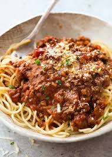

Bolognese Pasta

Everyone needs a great everyday Spaghetti Bolognese recipe, and this is mine!
The Bolognese Sauce is rich, thick and has beautiful depth of flavour.
It’s perfect for a quick midweek meal but even better if you can simmer it for a couple of hours!
Ingredients
- 1 1/2 tbsp olive oil
- 2 garlic cloves , minced
- 1 onion , finely chopped (brown, yellow or white)
- 1 lb / 500g beef mince (ground beef) OR half pork, half beef (Note 1)
- 1/2 cup (125 ml) dry red wine (sub water or beef broth/stock)
- 2 beef bouillon cubes , crumbled OR granulated beef bouillon (Note 2)
- 800g / 28 oz can crushed tomato (or tomato passata)
- 2 tbsp tomato paste
- 2 tsp white sugar , if needed (Note 3)
- 2 tsp Worcestershire sauce
- 2 dried bay leaves
- 2 sprigs fresh thyme (or 1/2 tsp dried thyme or oregano)
- 3/4 tsp cooking salt (kosher salt)
- 1/2 tsp black pepper▢1 1/2 tbsp olive oil
- 2 garlic cloves , minced
- 1 onion , finely chopped (brown, yellow or white)
- 1 lb / 500g beef mince (ground beef) OR half pork, half beef (Note 1)
- 1/2 cup (125 ml) dry red wine (sub water or beef broth/stock)
- 2 beef bouillon cubes , crumbled OR granulated beef bouillon (Note 2)
- 800g / 28 oz can crushed tomato (or tomato passata)
- 2 tbsp tomato paste
- 2 tsp white sugar , if needed (Note 3)
- 2 tsp Worcestershire sauce
- 2 dried bay leaves
- 2 sprigs fresh thyme (or 1/2 tsp dried thyme or oregano)
- 3/4 tsp cooking salt (kosher salt)
- 1/2 tsp black pepper
Steps
- Heat the olive oil in a large saucepan over medium heat.
- Add the garlic and onion, and cook until softened.
- Add the beef mince and cook until browned.
- Stir in the wine and cook until reduced.
- Add the beef bouillon, crushed tomato, tomato paste, sugar, Worcestershire sauce, bay leaves, thyme, salt, and pepper.
- Bring to a boil, then reduce heat and simmer for 1-2 hours, stirring occasionally.
Back to Home